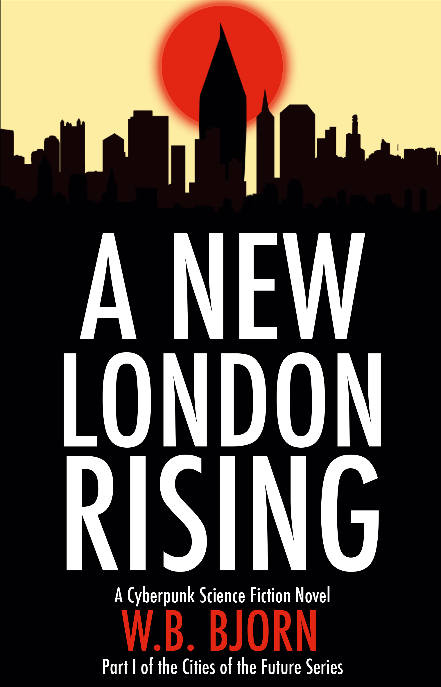

w.b. bjorn

A New London Rising
W.B. Bjorn
Chapter One
Chapter One
Shadow enfolded this house in the Outskirts of London. The streets forking their way around the structure were dusty, without electricity, without so much as a rat to scurry. Like a pair of lungs saturated with tar, the area fought a losing battle for its own existence. There were other houses, but no longer a neighborhood. No one lived there but the small party hiding in this house—and they wanted desperately to remain undiscovered.
Inside, Sefu’s chair creaked in relief from his colossal weight as he stood up and picked his way carefully through the sleeping figures lying on the floor. He reached the window and drew back the thick black tarp covering it. A low hanging fog obscured all light from the moon and stars. The grey pressed down like a falling ceiling. He glanced around, hardly breathing, and let the tarp fall back again.
Nothing. Nothing visible. Then why was he so on edge? A long time they had run, and a long time his instincts had kept them alive, and now it was only them, their little group, hiding cage like insects under grains of rice.
He turned around to find his wife, Nkiruka, sitting up. She was watching him intently. He knew she recognized his tension.
“He is here?” she mouthed to him. Her eyes betrayed little fear. She looked ready—ready to run.
He could only shake his head. For years they had lived in the Outskirts and escaped detection with cautious migration. Every night of the month a new squat, and never in the same order. Their ward against evil was the systematic erraticism. He sighed quietly in his chair. Their system was proven to work, but what could be proven to work forever? Nkiruka rose from the blankets where their son Faraji was still sleeping and made her way over to him, putting her arms around his neck.
“Something is wrong?” she whispered in his ear. “We should wake them?”
Sefu looked across the floor of the room where the others slept. They were all long-time friends or family. Stephen, Afia, and Amadi under a pile of blankets in the far corner. Agni and Nara were sleeping together near the door to the hall. The huge figure of Gus was coiled in the middle of the room next to his tiny daughter, Jess. Jozef and Wit slept apart not far away.
There were twelve of them in total and they all knew what to do in the event of their discovery. If their party was set upon, most would stay to fight, while Gus would take Jess, Nkiruka, and Faraji and run for the old tube tunnels, from which they would try to navigate their way into the city proper. The old tubes were dark and dangerous. Most of the adults knew their chances of ever reaching the city were poor. This had been their plan since the day Gus’s wife Katherine had failed to return to them the previous summer. She was not the first to vanish but the whole group missed her painfully, so much that some suggested they call their pursuers to them and mount a last stand. Sefu had persuaded them away from that suicidal course. This plan had been their compromise, and he knew they would stick to it—most were tired of running.
“I don’t know. I feel he is here, but I do not see him.”
“We should prepare for him, or leave now,” she said quietly. Her eyes were sad, and she tightened her grip on him.
“To go outside,” he said, “even to run away, is not a safe thing. What if he does not come? We will be split. We will have no shelter. We will be less safe out there than in here. You know this.”
She looked at him slowly, nodded.
“I will keep watch the rest of the night,” he said, “Stay with Faraji. Be ready to leave quickly. That is all we can do.”
He rose once again and went to the window to peer outside. This time he remained there with one eye at the side of the tarp. The fog rolled slowly past them, moving westward. The other buildings were dark, silent, their windows broken like jagged teeth, their bricks eroded. Perhaps they were empty, but he couldn’t say for certain.
He stayed like that a long time while the others slept until finally, with a flutter, something caught his eye.
It was not what he had expected. It was only a bird.
A raven had detached from one of the many broken lampposts on the street. Sefu had not seen it perching there. The bird beat the air with a strange awkwardness, circling just below the ceiling of fog and, to his great dismay, descended immediately toward the house and landed in front of the window. Even in the foggy half-light, he could see the bird was looking up at him—directly at him.
Its eyes were not the eyes of a bird. They luminesced, glowed, focused and twisted inside like the lens of a camera. He had never seen anything like it, but he knew what it meant: almost a decade of hiding, scrounging a living in this rubbish heap of a district, eating vegetable grown in tips, standing by helplessly as friends and family vanished, all this was at an end for him. He had no idea what this bird was, except an omen. As if to confirm his suspicions, the animal fluttered and leapt toward the window and gave the glass one great thrust with its beak.
It cracked. The sound woke most of the party. The room, which had been so quiet not a second before, burst into action. Sefu was whispering to everyone to wake up, that they had been found. Nkiruka and Gus were the first on their feet and Sefu ran to his wife, who was holding back tears, and kissed her.
“Go now, my love,” he said, even as the others were arming themselves with whatever rudimentary weapons they had collected over the years.
“You kill him. For our son,” she said fiercely, and she gathered Faraji into her arms and followed Gus to the back door. Sefu breathed a silent prayer as it closed behind them. He was glad she had not looked back at him.
I will try.
The remaining eight including himself stood in the room, weapons in hand, looking at each other. Their emotions were many. Some faces looked angry, others resigned, others afraid. They looked uncertainly to him for direction. He knew they were outmatched, that their bats, knuckledusters, wooden planks, and knives were no match for whatever was about to come at them.
“Listen!” he started. “Kill their leader if you can. The pale one, the one with black veins. Watch behind you. Remember that we cannot see some of them. Get away from the windows. Act qui . . .”
The splintering of the front door cut him off. It flew off its hinges and landed on Amadi, who had been the closest. A darkly clad man walked deliberately through the gaping doorway. He wore a cowl that obscured his face.
There was a hissing. Gas swirled outward from beneath the man’s pitch black cloak.
The squatters began to choke and gasp even as the man stepped into the room. The noxious perfume writhed in their lungs and their eyes bulged and watered from the pain. Sefu watched as his comrades sank to their knees, holding their throats. The man in black walked unaffected into the center of the room, close enough for any of them to touch him, and close enough for them to see his face. A ghastly white face with thin black implants that traced his veins and ran the length of his skull down to his forehead. Sefu’s lungs burned, but he stayed standing. The air threatened to paralyze him. The man in black stopped before him, watching smugly as he struggled. His expression seemed to say You have deserved this for a long time. Even as Sefu towered over the other man, he felt as if he were in the presence of a vengeful god.
In one last effort, Sefu surged toward the other and gripped his neck. His hands closed with all their strength. He lifted the other’s feet from the ground and tried to crush his windpipe. The movement would have killed a different man instantly. But the man in black remained in his hands, like a rag doll, without struggling, without so much as a kick, without any cry, eyes open and staring directly into Sefu’s with a cold vengeful intelligence. Suddenly, Sefu cried out in pain as lightning shot into his body. It flowed from the other’s body into his. A hurricane of electric cackling and the smell of burning flesh tainted the air. Sefu wanted to let go. He wanted to make it stop, but the electricity constricted his hands and locked them into place. His lungs burned with toxicity. His body was failing. He felt pain beyond any act of will.
Wizard . . . Devil!
The electricity stopped. Sefu fell unconscious to the floor. The man in black settled lightly on his feet where Sefu had lifted him from the ground. All the squatters lay prone and unmoving.
De-camo.
The man in black spoke the word in his mind. He pulled out a pistol, pointed it down at Sefu and shot him twice in the head.
With his command, seven men in gas masks and carrying assault rifles appeared from thin air near the door. They each positioned themselves above one of the squatters and followed their leader’s example. When they had finished they piled the bodies together in the center of the room and set the place alight.
Colonel, asked Gene when they were outside, they got tipped. Just who on earth could do that?
Hurn, the man in black, spoke into his skullcom.
A job for tomorrow. Tonight we find the ones that escaped.
Yessir.
The seven men disappeared again into the blackness of the night streets and Hurn led them on the trail of the four escaped squatters. They left the derelict mansion to burn like a funeral pyre, its smoke mingling with the fog. For minutes the area seemed empty again. Nothing moved. No sounds rivaled the bellows of the fire.
Again, a flutter of wings cut through the air.
Left behind, the raven perched on a rooftop opposite the burning building. It took flight and circled above the haunted ground, eyes like cameras, recording everything. It whipped back and forth in an unseen conflict of wills, and finally winged to the north, following the hunters.